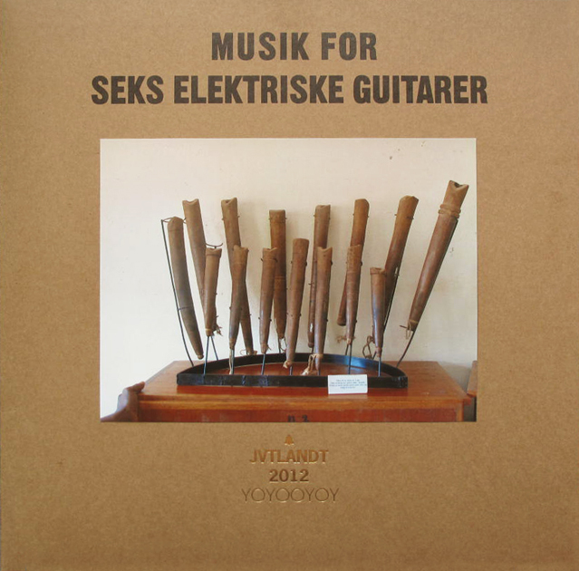
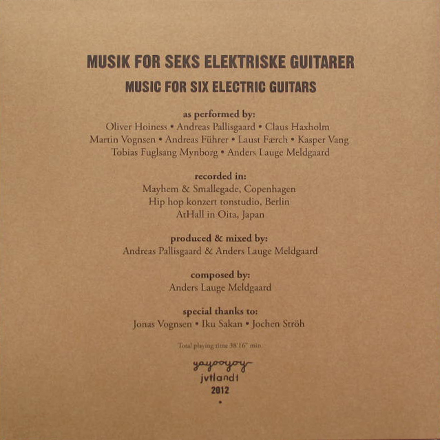
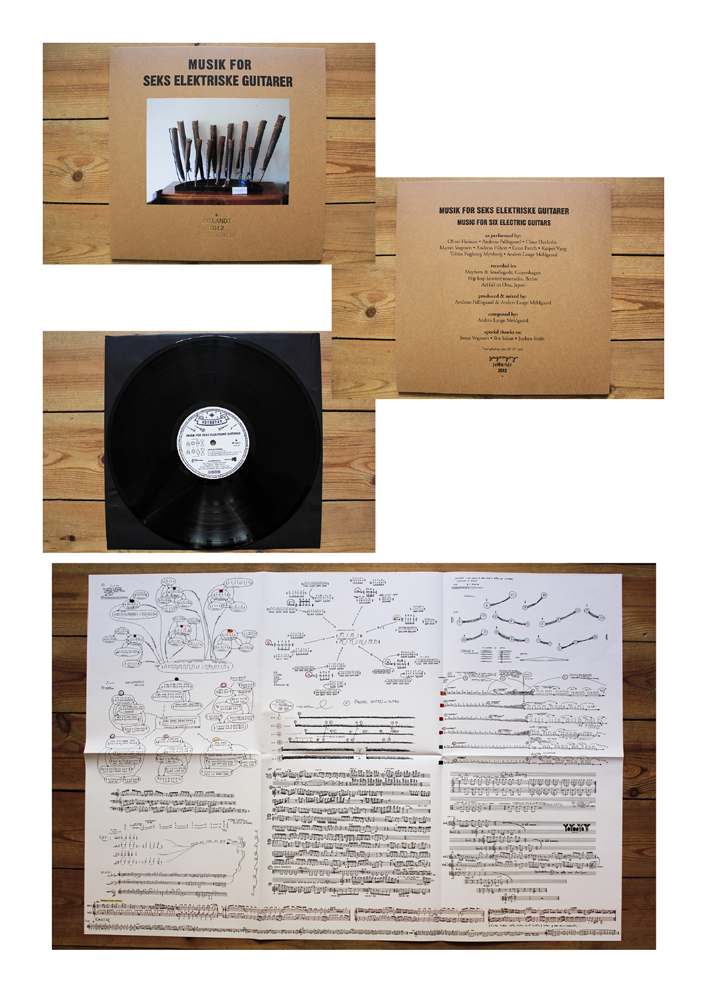

Musik for seks elektriske guitarer / Music For Six Electric Guitars · 2012
A series of compositions for six electric guitars, some of which are documented on the album “Musik for seks elektriske guitarer” . The music premiered at Copenhagen Jazz Festival 2011 and was later performed in Sweden, Germany and Japan.
Pressrelease for the album:
Following his colorful solo-project Frisk Frugt and a decade of doing adventurous music and art projects in the yoyooyoy collective, composer, guitarist and eccentric multi-talent Anders Lauge Meldgaard has put the full force of his creative power into the mysteries of the electric guitar, bringing us his most epic creation to date.
The idea for the guitar sextet sprung while Meldgaard was traveling through Mali and Burkina Faso and encountering the local music. Much impressed by the simplicity, discipline and tightly knit collaboration of the musicians he witnessed, Meldgaard decided to explore a similar strategy for the electric guitar. The result takes minimal compositions, based on extended repetition and microscopic - yet danceable - grooves, as a departure point for climactic improvisations. Invoking, perhaps, as much the minimalism of Steve Reich as the cathartic rhythms of Konono No. 1, approaching even progressive psychedelia.
“Music For Six Electric Guitars” premiered at the Copenhagen Jazz Festival in 2010 and has since toured both Japan and Germany, as well as giving various appearances in Denmark. Gathering a team of highly respected guitarists from the Danish avant-garde and rock scenes, Meldgaards music is interpreted by a towering amount of talent from groups such as Pinkunoizu, Kalle del Hey, State Changes According To A Wind, Skammens Vogn, Joy L, Lily Electric, Shiggajon and others.
The material for this LP was produced over a one year period of intense work - with recording sessions in Copenhagen, Berlin and Oita in Japan - leading to a dense, multilayered creation of equal beauty and playfulness. As the title of one of the tracks lays it out, it’s a bicycle ride straight to the sun.

Find album on Bandcamp